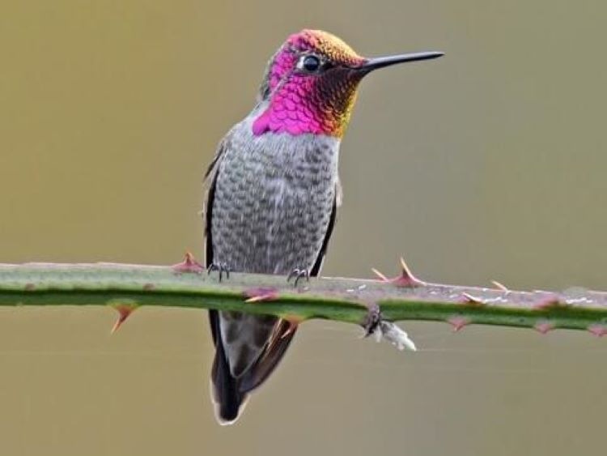

Click the Pics to reveal more info :)
Scientific name: Trochilidae
Location/Environment: With over 300 species, hummingbirds live in a wide variety of habitats from tropical forests to cold Alaskan climates.
Lifespan: The average lifespan of a hummingbird is about 5 years however some have been recorded living up to 10.

Diet: Hummingbirds love to eat small insects.
Differences between sexes and ages: Males tend to have orange, dark green, and black feathers, while females have brown, white, and green feathers.
Fun facts: Hummingbirds are the only birds that are able to fly backwards and have no sense of smell.